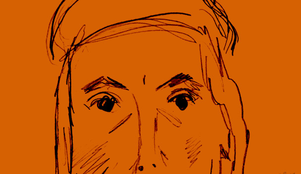
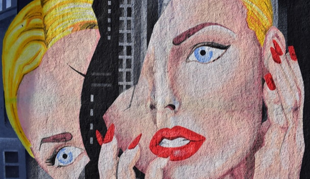
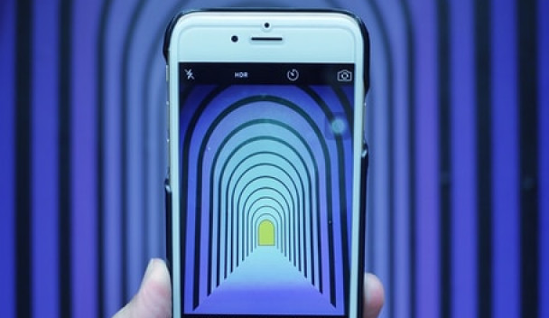
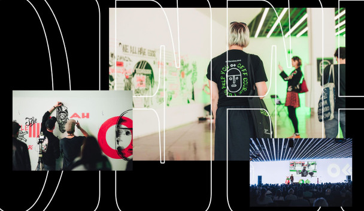
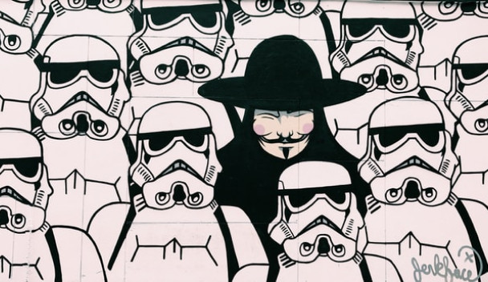
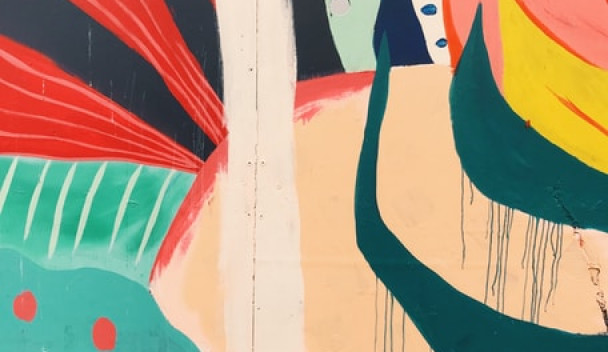
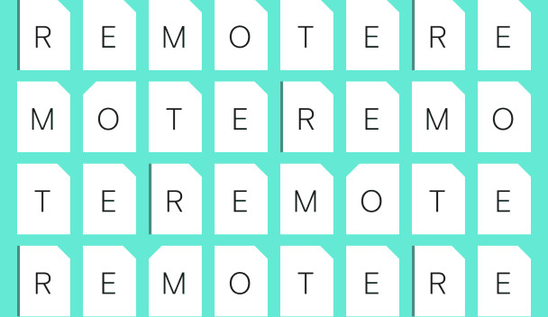

Here are some things you should know regarding how we work

Hello world, or, in other words, why this blog exists

Connecting artificial intelligence with digital product design
I believe learning is the most important skill

Clients are part of the team
Connecting artificial intelligence with digital product design

Granny gives everyone the finger, and other tips from OFFF Barcelona

Here are some things you should know regarding how we work

It’s all about finding the perfect balance

Clients are part of the team
Here are some things you should know regarding how we work
How modern remote working tools get along with Old School Cowboy's methods
Granny gives everyone the finger, and other tips from OFFF Barcelona
Hello world, or, in other words, why this blog exists
Here are some things you should know regarding how we work

Updating list of 50+ sources on distributed teams, remote work, and how to make it all work better
A few words about this blog platform, Ghost, and how this site was made
How modern remote working tools get along with Old School Cowboy's methods